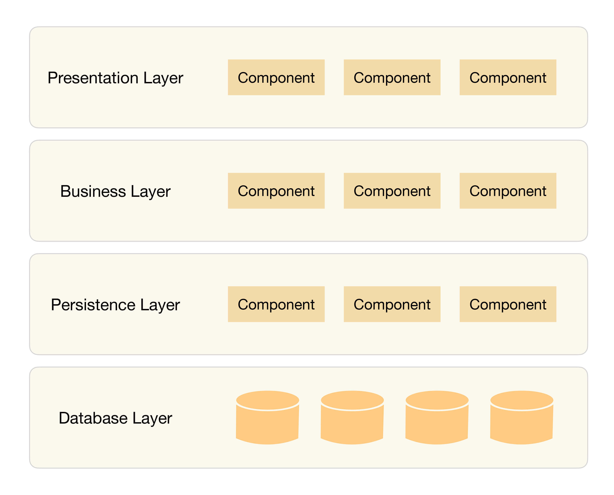
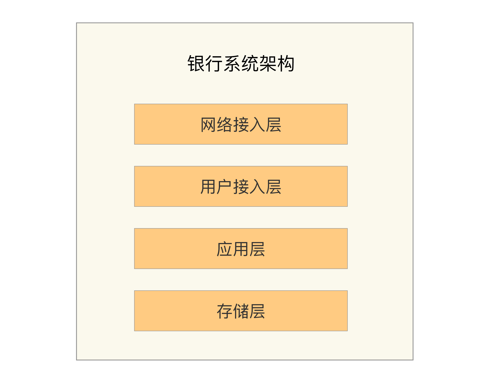

- 00 开篇词 照着做，你也能成为架构师！.md.html
- 01 架构到底是指什么？.md.html
- 02 架构设计的历史背景.md.html
- 03 架构设计的目的.md.html
- 04 复杂度来源：高性能.md.html
- 05 复杂度来源：高可用.md.html
- 06 复杂度来源：可扩展性.md.html
- 07 复杂度来源：低成本、安全、规模.md.html
- 08 架构设计三原则.md.html
- 09 架构设计原则案例.md.html
- 10 架构设计流程：识别复杂度.md.html
- 11 架构设计流程：设计备选方案.md.html
- 12 架构设计流程：评估和选择备选方案.md.html
- 13 架构设计流程：详细方案设计.md.html
- 14 高性能数据库集群：读写分离.md.html
- 15 高性能数据库集群：分库分表.md.html
- 16 高性能NoSQL.md.html
- 17 高性能缓存架构.md.html
- 18 单服务器高性能模式：PPC与TPC.md.html
- 19 单服务器高性能模式：Reactor与Proactor.md.html
- 20 高性能负载均衡：分类及架构.md.html
- 21 高性能负载均衡：算法.md.html
- 22 想成为架构师，你必须知道CAP理论.md.html
- 23 想成为架构师，你必须掌握的CAP细节.md.html
- 24 FMEA方法，排除架构可用性隐患的利器.md.html
- 25 高可用存储架构：双机架构.md.html
- 26 高可用存储架构：集群和分区.md.html
- 27 如何设计计算高可用架构？.md.html
- 28 业务高可用的保障：异地多活架构.md.html
- 29 异地多活设计4大技巧.md.html
- 30 异地多活设计4步走.md.html
- 31 如何应对接口级的故障？.md.html
- 32 可扩展架构的基本思想和模式.md.html
- 33 传统的可扩展架构模式：分层架构和SOA.md.html
- 34 深入理解微服务架构：银弹 or 焦油坑？.md.html
- 35 微服务架构最佳实践 - 方法篇.md.html
- 36 微服务架构最佳实践 - 基础设施篇.md.html
- 37 微内核架构详解.md.html
- 38 架构师应该如何判断技术演进的方向？.md.html
- 39 互联网技术演进的模式.md.html
- 40 互联网架构模板：存储层技术.md.html
- 41 互联网架构模板：开发层和服务层技术.md.html
- 42 互联网架构模板：网络层技术.md.html
- 43 互联网架构模板：用户层和业务层技术.md.html
- 44 互联网架构模板：平台技术.md.html
- 45 架构重构内功心法第一式：有的放矢.md.html
- 46 架构重构内功心法第二式：合纵连横.md.html
- 47 架构重构内功心法第三式：运筹帷幄.md.html
- 48 再谈开源项目：如何选择、使用以及二次开发？.md.html
- 49 谈谈App架构的演进.md.html
- 50 架构实战：架构设计文档模板.md.html
- 51 如何画出优秀的软件系统架构图？.md.html
- 加餐｜业务架构实战营开营了.md.html
- 加餐｜单服务器高性能模式性能对比.md.html
- 加餐｜扒一扒中台皇帝的外衣.md.html
- 如何高效地学习开源项目 华仔，放学别走！ 第3期.md.html
- 新书首发 《从零开始学架构》.md.html
- 架构专栏特别放送 华仔，放学别走！ 第2期.md.html
- 架构专栏特别放送 华仔，放学别走！第1期.md.html
- 架构师必读书单 华仔，放学别走！ 第5期.md.html
- 架构师成长之路 华仔，放学别走！ 第4期.md.html
- 结束语 坚持，成就你的技术梦想.md.html
- 捐赠
33 传统的可扩展架构模式：分层架构和SOA
相比于高性能、高可用架构模式在最近几十年的迅猛发展来说，可扩展架构模式的发展可以说是步履蹒跚，最近几年火热的微服务模式算是可扩展模式发展历史中为数不多的亮点，但这也导致了现在谈可扩展的时候必谈微服务，甚至微服务架构都成了架构设计的银弹，高性能也用微服务、高可用也用微服务，很多时候这样的架构设计看起来高大上，实际上是大炮打蚊子，违背了架构设计的“合适原则”和“简单原则”。
为了帮助你在实践中更好的进行可扩展架构设计，我将分别介绍几种可扩展架构模式，指出每种架构模式的关键点和优缺点。今天我来介绍传统的可扩展模式，包括分层架构和SOA，后面还会介绍微服务架构。
分层架构
分层架构是很常见的架构模式，它也叫N层架构，通常情况下，N至少是2层。例如，C/S架构、B/S架构。常见的是3层架构（例如，MVC、MVP架构）、4层架构，5层架构的比较少见，一般是比较复杂的系统才会达到或者超过5层，比如操作系统内核架构。
按照分层架构进行设计时，根据不同的划分维度和对象，可以得到多种不同的分层架构。
- C/S架构、B/S架构
划分的对象是整个业务系统，划分的维度是用户交互，即将和用户交互的部分独立为一层，支撑用户交互的后台作为另外一层。例如，下面是C/S架构结构图。
- MVC架构、MVP架构
划分的对象是单个业务子系统，划分的维度是职责，将不同的职责划分到独立层，但各层的依赖关系比较灵活。例如，MVC架构中各层之间是两两交互的：

- 逻辑分层架构
划分的对象可以是单个业务子系统，也可以是整个业务系统，划分的维度也是职责。虽然都是基于职责划分，但逻辑分层架构和MVC架构、MVP架构的不同点在于，逻辑分层架构中的层是自顶向下依赖的。典型的有操作系统内核架构、TCP/IP架构。例如，下面是Android操作系统架构图。
典型的J2EE系统架构也是逻辑分层架构，架构图如下：

针对整个业务系统进行逻辑分层的架构图如下：

无论采取何种分层维度，分层架构设计最核心的一点就是需要保证各层之间的差异足够清晰，边界足够明显，让人看到架构图后就能看懂整个架构，这也是分层不能分太多层的原因。否则如果两个层的差异不明显，就会出现程序员小明认为某个功能应该放在A层，而程序员老王却认为同样的功能应该放在B层，这样会导致分层混乱。如果这样的架构进入实际开发落地，则A层和B层就会乱成一锅粥，也就失去了分层的意义。
分层架构之所以能够较好地支撑系统扩展，本质在于隔离关注点（separation of concerns），即每个层中的组件只会处理本层的逻辑。比如说，展示层只需要处理展示逻辑，业务层中只需要处理业务逻辑，这样我们在扩展某层时，其他层是不受影响的，通过这种方式可以支撑系统在某层上快速扩展。例如，Linux内核如果要增加一个新的文件系统，则只需要修改文件存储层即可，其他内核层无须变动。
当然，并不是简单地分层就一定能够实现隔离关注点从而支撑快速扩展，分层时要保证层与层之间的依赖是稳定的，才能真正支撑快速扩展。例如，Linux内核为了支撑不同的文件系统格式，抽象了VFS文件系统接口，架构图如下：
如果没有VFS，只是简单地将ext2、ext3、reiser等文件系统划为“文件系统层”，那么这个分层是达不到支撑可扩展的目的的。因为增加一个新的文件系统后，所有基于文件系统的功能都要适配新的文件系统接口；而有了VFS后，只需要VFS适配新的文件系统接口，其他基于文件系统的功能是依赖VFS的，不会受到影响。
对于操作系统这类复杂的系统，接口本身也可以成为独立的一层。例如，我们把VFS独立为一层是完全可以的。而对于一个简单的业务系统，接口可能就是Java语言上的几个interface定义，这种情况下如果独立为一层，看起来可能就比较重了。例如，经典的J2EE分层架构中，Presentation Layer和Business Layer之间如果硬要拆分一个独立的接口层，则显得有点多余了。
分层结构的另外一个特点就是层层传递，也就是说一旦分层确定，整个业务流程是按照层进行依次传递的，不能在层之间进行跳跃。最简单的C/S结构，用户必须先使用C层，然后C层再传递到S层，用户是不能直接访问S层的。传统的J2EE 4层架构，收到请求后，必须按照下面的方式传递请求：
分层结构的这种约束，好处在于强制将分层依赖限定为两两依赖，降低了整体系统复杂度。例如，Business Layer被Presentation Layer依赖，自己只依赖Persistence Layer。但分层结构的代价就是冗余，也就是说，不管这个业务有多么简单，每层都必须要参与处理，甚至可能每层都写了一个简单的包装函数。我以用户管理系统最简单的一个功能“查看头像”为例。查看头像功能的实现很简单，只是显示一张图片而已，但按照分层分册架构来实现，每层都要写一个简单的函数。比如：
Presentation Layer：
package layer;
/**
* Created by Liyh on 2017/9/18.
*/
public class AvatarView {
public void displayAvatar(int userId){
String url = AvatarBizz.getAvatarUrl(userId);
//此处省略渲染代码
return;
}
}
Business Layer：
package layer;
/**
* Created by Liyh on 2017/9/18.
*/
public class AvatarBizz {
public static String getAvatarUrl(int userId){
return AvatarDao.getAvatarUrl(userId);
}
}
Persistence Layer：
package layer;
/**
* Created by Liyh on 2017/9/18.
*/
public class AvatarDao {
public static String getAvatarUrl(int userId) {
//此处省略具体实现代码，正常情况下可以从MySQL数据库中通过userId查询头像URL即可
return "http://avatar.csdn.net/B/8/3/1_yah99_wolf.jpg";
}
}
可以看出Business Layer的AvatarBizz类的getAvatarUrl方法和Persistence Layer的AvatarDao类的getAvatarUrl方法，名称和参数都一模一样。
既然如此，我们是否应该自由选择是否绕过分层的约束呢？例如，“查看头像”的示例中，直接让AvatarView类访问AvatarDao类，不就可以减少AvatarBizz的冗余实现了吗？
答案是不建议这样做，分层架构的优势就体现在通过分层强制约束两两依赖，一旦自由选择绕过分层，时间一长，架构就会变得混乱。例如，Presentation Layer直接访问Persistence Layer，Business Layer直接访问Database Layer，这样做就失去了分层架构的意义，也导致后续扩展时无法控制受影响范围，牵一发动全身，无法支持快速扩展。除此以外，虽然分层架构的实现在某些场景下看起来有些啰嗦和冗余，但复杂度却很低。例如，样例中AvatarBizz的getAvatarUrl方法，实现起来很简单，不会增加太多工作量。
分层架构另外一个典型的缺点就是性能，因为每一次业务请求都需要穿越所有的架构分层，有一些事情是多余的，多少都会有一些性能的浪费。当然，这里所谓的性能缺点只是理论上的分析，实际上分层带来的性能损失，如果放到20世纪80年代，可能很明显；但到了现在，硬件和网络的性能有了质的飞越，其实分层模式理论上的这点性能损失，在实际应用中，绝大部分场景下都可以忽略不计。
SOA
SOA的全称是Service Oriented Architecture，中文翻译为“面向服务的架构”，诞生于上世纪90年代，1996年Gartner的两位分析师Roy W. Schulte和Yefim V. Natis发表了第一个SOA的报告。
2005年，Gartner预言：到了2008年，SOA将成为80%的开发项目的基础。历史证明这个预言并不十分靠谱，SOA虽然在很多企业成功推广，但没有达到占有绝对优势的地步。SOA更多是在传统企业（例如，制造业、金融业等）落地和推广，在互联网行业并没有大规模地实践和推广。互联网行业推行SOA最早的应该是亚马逊，得益于杰弗·贝索斯的远见卓识，亚马逊内部的系统都以服务的方式构造，间接地促使了后来的亚马逊云计算技术的出现。
SOA出现 的背景是企业内部的IT系统重复建设且效率低下，主要体现在：
- 企业各部门有独立的IT系统，比如人力资源系统、财务系统、销售系统，这些系统可能都涉及人员管理，各IT系统都需要重复开发人员管理的功能。例如，某个员工离职后，需要分别到上述三个系统中删除员工的权限。
- 各个独立的IT系统可能采购于不同的供应商，实现技术不同，企业自己也不太可能基于这些系统进行重构。
- 随着业务的发展，复杂度越来越高，更多的流程和业务需要多个IT系统合作完成。由于各个独立的IT系统没有标准的实现方式（例如，人力资源系统用Java开发，对外提供RPC；而财务系统用C#开发，对外提供SOAP协议），每次开发新的流程和业务，都需要协调大量的IT系统，同时定制开发，效率很低。
为了应对传统IT系统存在的问题，SOA提出了3个关键概念。
- 服务
所有业务功能都是一项服务，服务就意味着要对外提供开放的能力，当其他系统需要使用这项功能时，无须定制化开发。
服务可大可小，可简单也可复杂。例如，人力资源管理可以是一项服务，包括人员基本信息管理、请假管理、组织结构管理等功能；而人员基本信息管理也可以作为一项独立的服务，组织结构管理也可以作为一项独立的服务。到底是划分为粗粒度的服务，还是划分为细粒度的服务，需要根据企业的实际情况进行判断。
- ESB
ESB的全称是Enterprise Service Bus，中文翻译为“企业服务总线”。从名字就可以看出，ESB参考了计算机总线的概念。计算机中的总线将各个不同的设备连接在一起，ESB将企业中各个不同的服务连接在一起。因为各个独立的服务是异构的，如果没有统一的标准，则各个异构系统对外提供的接口是各式各样的。SOA使用ESB来屏蔽异构系统对外提供各种不同的接口方式，以此来达到服务间高效的互联互通。
- 松耦合
松耦合的目的是减少各个服务间的依赖和互相影响。因为采用SOA架构后，各个服务是相互独立运行的，甚至都不清楚某个服务到底有多少对其他服务的依赖。如果做不到松耦合，某个服务一升级，依赖它的其他服务全部故障，这样肯定是无法满足业务需求的。
但实际上真正做到松耦合并没有那么容易，要做到完全后向兼容，是一项复杂的任务。
典型的SOA架构样例如下：

SOA架构是比较高层级的架构设计理念，一般情况下我们可以说某个企业采用了SOA的架构来构建IT系统，但不会说某个独立的系统采用了SOA架构。例如，某企业采用SOA架构，将系统分为“人力资源管理服务”“考勤服务”“财务服务”，但人力资源管理服务本身通常不会再按照SOA的架构拆分更多服务，也不会再使用独立的一套ESB，因为这些系统本身可能就是采购的，ESB本身也是采购的，如果人力资源系统本身重构为多个子服务，再部署独立的ESB系统，成本很高，也没有什么收益。
SOA解决了传统IT系统重复建设和扩展效率低的问题，但其本身也引入了更多的复杂性。SOA最广为人诟病的就是ESB，ESB需要实现与各种系统间的协议转换、数据转换、透明的动态路由等功能。例如，下图中ESB将JSON转换为Java（摘自《Microservices vs. Service-Oriented Architecture》）。

下图中ESB将REST协议转换为RMI和AMQP两个不同的协议：
ESB虽然功能强大，但现实中的协议有很多种，如JMS、WS、HTTP、RPC等，数据格式也有很多种，如XML、JSON、二进制、HTML等。ESB要完成这么多协议和数据格式的互相转换，工作量和复杂度都很大，而且这种转换是需要耗费大量计算性能的，当ESB承载的消息太多时，ESB本身会成为整个系统的性能瓶颈。
当然，SOA的ESB设计也是无奈之举。回想一下SOA的提出背景就可以发现，企业在应用SOA时，各种异构的IT系统都已经存在很多年了，完全重写或者按照统一标准进行改造的成本是非常大的，只能通过ESB方式去适配已经存在的各种异构系统。
小结
今天我为你讲了传统的可扩展架构模式，包括分层架构和SOA架构，希望对你有所帮助。
这就是今天的全部内容，留一道思考题给你吧，为什么互联网企业很少采用SOA架构？
© 2019 - 2023 Liangliang Lee. Powered by gin and hexo-theme-book.